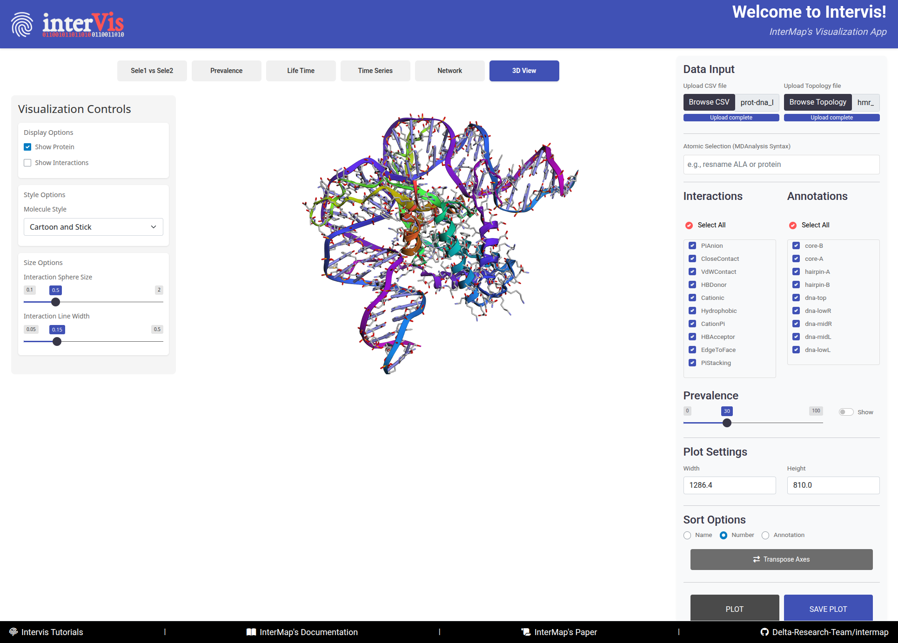

Visualizations (InterVis)
InterMap comes with an interactive Shiny application named InterVis, which allows users to explore the interaction fingerprints computed by the tool. This user-friendly web interface simplifies the analysis and interpretation of molecular interaction data.
1. How to Launch the App¶
Once InterMap is installed and your virtual environment is activated, run the following command from the terminal:
This will automatically launch the InterVis server and open your default web browser with the app's interface.

No need to manually configure ports or set paths, everything is designed for immediate use.
2. App Interface Components¶
The InterVis interface consists of three main areas:
Control Panel (Right Side)
- Contains tools for loading data and configuring visualizations.
- Always visible for quick access.
Visualization Panel (Left Side)
- Displays different types of visualizations.
- Organized into tabs for smooth navigation.
Footer (Bottom Bar)
- Provides direct links to the repository, scientific paper, and official documentation.
3. Using the App¶
3.1. Upload Your Data¶
Upload InterMap CSV File
- Click on "Browse CSV"
- Select the interaction fingerprint file generated by InterMap
Upload Topology File
- Click on "Browse Topology"
- Supported formats: .pdb, .gro, .psf, etc.
Atom/Residue Selection (Optional)
- Filter interactions using MDAnalysis selection syntax
Example
3.2. Filter Options¶
Interaction Filter
- Use the Interaction Selector to list all detected interaction types
- Select one or multiple types
- Click "Select All" to toggle all options
Annotation Filter
- Filter interactions based on custom annotations
- Useful for focusing on specific regions or labels
- Can be combined with other filters
Prevalence Threshold
- Adjust minimum prevalence (0–100%)
- Affects all visualizations simultaneously
- Option to show/hide numeric values on plots
4. Tabs and Visualizations¶
4.1. Tab 1: Sele1 vs Sele2¶
Overview of all interaction pairs between two selections.

Interpretation Guide:
- Axes
- X-axis: Selection 1 (from config file)
- Y-axis: Selection 2 (from config file)
- Colored Cells
- Color: Interaction type
- Number: (Optional) Interaction prevalence
- Layout: Uses an interaction priority system — if multiple interactions occur, the most relevant is shown
Advanced Features:
Hover
- Sel1: Residue/Atom 1
- Note1: Annotation 1
- Sel2: Residue/Atom 2
- Note2: Annotation 2
- Interaction: Type
- Prevalence: XX.X%
- Transpose Button to swap X/Y axes — useful for alternate views
4.2. Tab 2 : Prevalence¶
Bar plots showing interaction prevalence for each component.

Top Panel (Selection 1):
- X-axis: Components from Selection 1
- Y-axis: Prevalence (%)
- Bars:
- Color: Interaction type
- Height: Relative prevalence
Bottom Panel (Selection 2):
- Same structure as the top panel
- Focused on Selection 2 components
Hover
- Selection_1: Component 1
- Selection_2: Component 2
- Interaction: Type
- Prevalence: XX.X%
- Annotation: Specific label
4.3. Tab 3: Life Time¶
Violin plots representing the distribution of interaction lifetimes.

Plot Elements:
- Violin Shape: Distribution of durations
- Width: Relative frequency
- Color: Interaction type
Internal Markers:
- Center line: Median
- Box: Interquartile range
- Dots: Outliers
Interpretation:
- Wide violins = variable interactions
- Narrow violins = stable interactions
- Outliers = rare yet stable periods
Hover
- Pair: Selection 1 – Selection 2
- Interaction: Type
- Prevalence: XX.X%
- Lifetime: Frames
- Frame Range: Start–End
4.4. Tab 4: Time Series¶
Tracks the occurrence of interactions over time.

Components:
- Main Panel
- X-axis: Frame number
- Y-axis: Interaction pairs
- Dots: Interaction present
- Top Histogram
- Number of interactions per frame
- Side Histogram
- Total prevalence per pair
Interpretation:
- Identify synchronous events
- Track stable vs. transient interactions
- Reveal dynamic behavior
Hover
- Frame: Frame number
- Selection Pair: Interacting residues
- Interaction: Type
- Prevalence: Global %
4.5. Tab 5: Network¶
Interactive molecular network view.

Elements:
- Nodes:
- 🔵 Blue = Selection 1 components
- 🔴 Red = Selection 2 components
- Links:
- Color: Interaction type
- Number: Prevalence
- Length: Inversely related to prevalence
Features:
- Drag & rearrange nodes
- Zoom and pan
- Hover to reveal details
- Automatic layout adjustments
4.6. Tab 6: 3D View¶
3D structure and interaction display.

Main Controls:
- Visibility Options
- Show/Hide structure
- Show/Hide interactions
- Molecular Styles
- Cartoon: Ribbon-style
- Stick: Lines for bonds
- Ball and Stick: Atoms + bonds
- Sphere: Atom-centered spheres
- Cartoon and Stick: Combined mode
- Visualization Settings
- Sphere Size: Interaction marker size
- Line Width: Thickness of interaction edges
Structural Analysis:
- Contextualize interactions
- Visualize spatial proximity
- Identify structural patterns